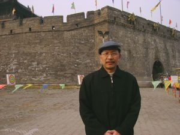

Jester-Knight
Literature
Film
Music
Visual Art
Tributes
Submissions
Links
Contact
Yuan Changming

Biography
Yuan Changming, 8-time Pushcart nominee and author of 5 chapbooks (including Kinship [2015] and The Origin of Letters [2015]), began to learn English at 19 and published monographs on translation before moving out of China. With a PhD in English, Yuan currently edits Poetry Pacific with Allen Qing Yuan in Vancouver and has poetry appearing in 1059 literary publications across 36 countries, including Best Canadian Poetry, BestNewPoemsOnline, Cincinnati Review and Threepenny Review.
Poetry Pacific Blogspot
Poetry Pacific on Facebook
Yuan's Blogspot
Click below for Yuan's work
Poems (.pdf) NEW!!!